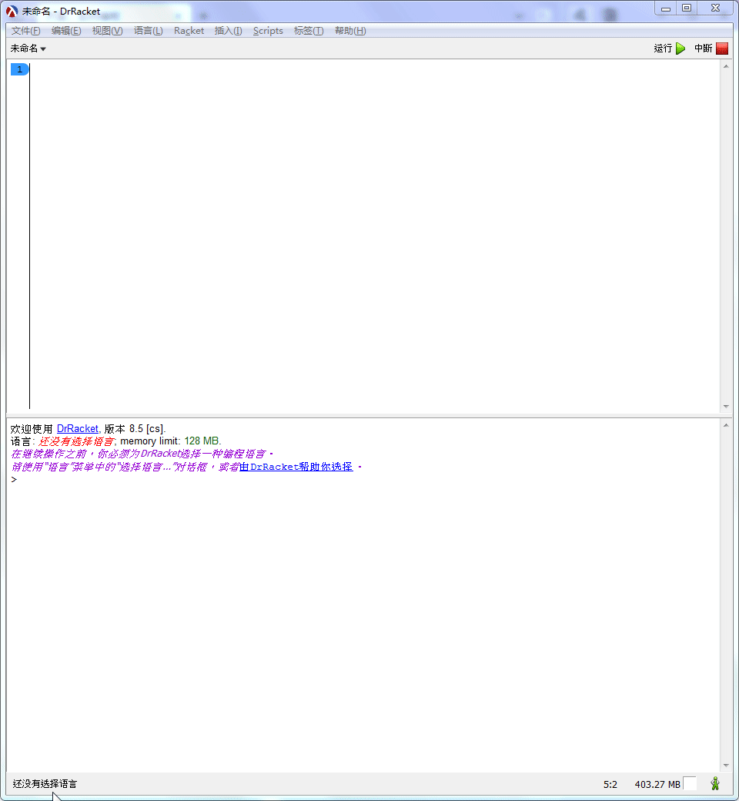
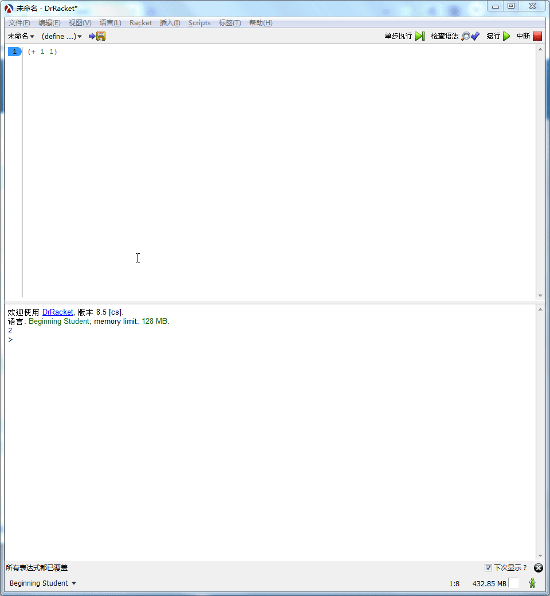
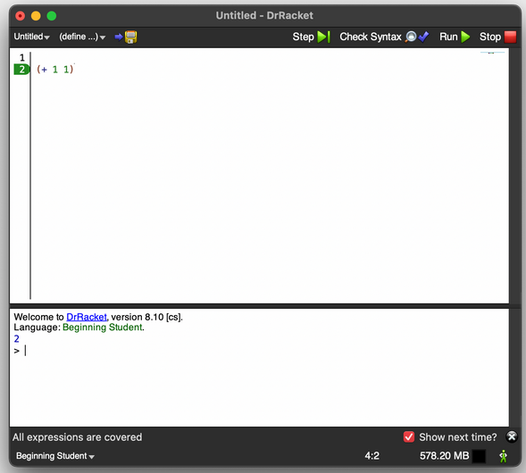

开篇：如何编程
Table of Contents
准备开发环境
下载Racket,这是用来写代码的东西：https://mirrors.tuna.tsinghua.edu.cn/racket-installers/8.10/racket-8.10-x86_64-win32-cs.exe ，安装.
第一个程序
当你还是孩子时，你的父母会教你用手指做算术："1+1等于几"，"3+2等于几"，此时你会用手指进行计算。 他们在进行“编程”，而你做了“计算”，这就是 编程和计算 的全部内容。
现在轮到你用Racket编程: 比如你想计算1+1
启动 DrRacket, 选择
初级语言（Beginning student）
在上方区域输入代码
(+ 1 1)，点击右上角运行按钮 ，计算结果会出现在下方
编程就是这么简单
Racket 的括号语法
我们使用的编程语言是 Racket， racket 采用了前缀表达式和括号语法: 1+1要写为 + 1 1 ,然后被括号 () 包起来:
(+ 1 1)
在Drracket 的上部分输入更多代码，点击 运行
(+ 2 2) (* 3 3) (- 4 2) (/ 6 2)
运行的结果： 4 9 2 3
DrRacket 的基本界面
 DrRacket 上部分为 定义区 ，我们在此设计程序、编写代码，比如:
- 输入
(+ 1 1) - 点击运行，DrRacket 会把定义区的表达式进行计算（或称求值），并在下半部分 交互区 显示结果